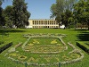

Nove de Julho,
Seis horas da manhã…
E no claro-escuro
Do despontar do dia,
Ouvi na rádio
(Fremente de alegria!)
A grata novidade:
Eram nomes de vilas
Que, nessa ocasião,
Passavam a cidade.
Entre elas… a Minha!
E confesso, chorei!
Mas chorei de emoção,
Não de vaidade.
Pois no meu coração,
Nessa manhã de Verão,
A minha Vila
Amanheceu… Cidade.